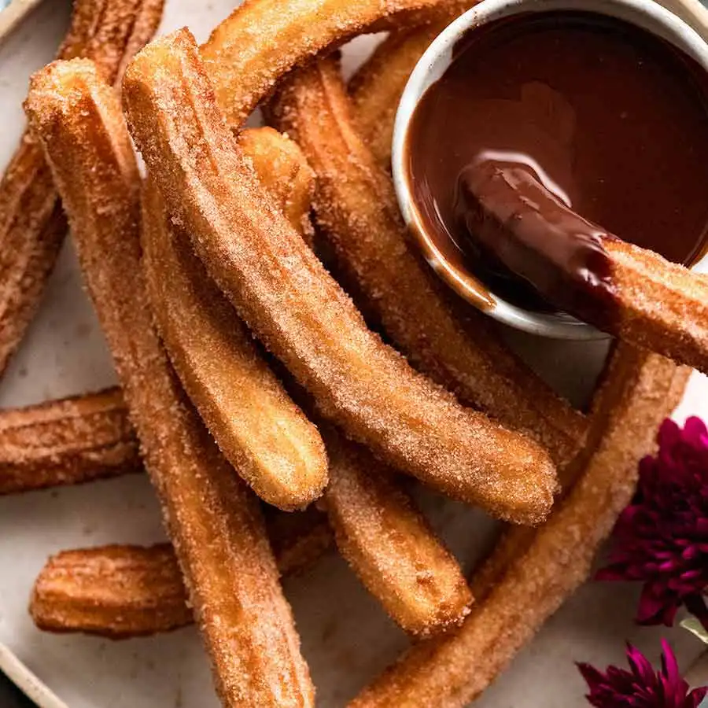

Elongated, crispy, crunchy and intensely fragrant, churros consist of deep-fried yeast dough encrusted with sugar. Although some may argue against consuming these sweet treats, warning others about the dangerous effects of sugar and fat on human bodies, the popularity of churros throughout the world doesn't seem to wane.
Meal prep time : 20 minutes
Servings : 12